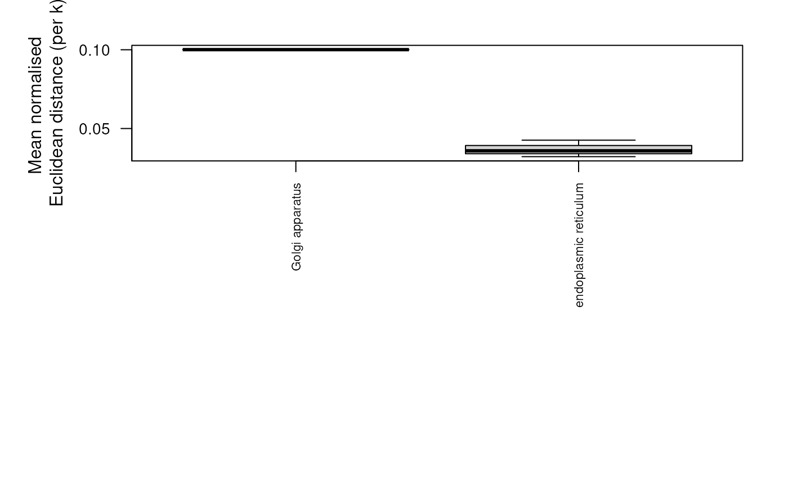

ClustDistList-class.RdA class for storing lists of ClustDist
instances.
Object of this class are created with the clustDist
function.
x:Object of class list containing valid
ClustDist instances.
log:Object of class list containing an object
creation log, containing among other elements the call that
generated the object.
.__classVersion__:The version of the instance. For development purposes only.
"[["Extracts a single ClustDist at position.
"["Extracts one of more ClustDists as
ClustDistList.
lengthReturns the number of ClustDists.
namesReturns the names of ClustDists, if
available. The replacement method is also available.
showDisplay the object by printing a short summary.
lapply(x, FUN, ...)Apply function FUN to each
element of the input x. If the application of FUN
returns and ClustDist, then the return value is an
ClustDistList, otherwise a list
plotPlots a boxplot of the distance results per protein set.
library('pRolocdata')
data(dunkley2006)
par <- setAnnotationParams(inputs =
c("Arabidopsis thaliana genes",
"Gene stable ID"))
#> Using species Arabidopsis thaliana genes (TAIR10)
#> Warning: Ensembl will soon enforce the use of https.
#> Ensure the 'host' argument includes "https://"
#> Using feature type Gene stable ID(s) [e.g. AT1G01010]
#> Connecting to Biomart...
#> Warning: Ensembl will soon enforce the use of https.
#> Ensure the 'host' argument includes "https://"
## add protein set/annotation information
xx <- addGoAnnotations(dunkley2006, par)
## filter
xx <- filterMinMarkers(xx, n = 50)
#> Retaining 19 out of 196 in GOAnnotations
xx <- filterMaxMarkers(xx, p = .25)
#> Retaining 14 out of 19 in GOAnnotations
## get distances for protein sets
dd <- clustDist(xx)
#>
|
| | 0%
|
|===== | 7%
|
|========== | 14%
|
|=============== | 21%
|
|==================== | 29%
|
|========================= | 36%
|
|============================== | 43%
|
|=================================== | 50%
|
|======================================== | 57%
|
|============================================= | 64%
|
|================================================== | 71%
|
|======================================================= | 79%
|
|============================================================ | 86%
|
|================================================================= | 93%
|
|======================================================================| 100%
## plot distances for all protein sets
plot(dd)

names(dd)
#> [1] "endoplasmic reticulum membrane" "mitochondrion"
#> [3] "plant-type vacuole" "nucleus"
#> [5] "vacuole" "plasmodesma"
#> [7] "cytosol" "chloroplast"
#> [9] "plastid" "cytoplasm"
#> [11] "Golgi membrane" "endosome"
#> [13] "chloroplast envelope" "trans-Golgi network"
## Extract first 4 ClustDist objects of the ClustDistList
dd[1:4]
#> Instance of class 'ClustDistList' containig 4 objects.
## Extract 1st ClustDist object
dd[[1]]
#> Object of class "ClustDist"
#> fcol = GOAnnotations
#> term = GO:0005789
#> id = endoplasmic reticulum membrane
#> nrow = 90
#> k's tested: 1 2 3 4 5
#> Size: 90
#> Size: 76
#> Size: 75
#> Size: NA
#> Size: NA
#> Clusters info:
#> ks.mean mean ks.norm norm
#> k = 1 1 0.2109 1 0.04706
#> k = 2 1 0.1562 1 0.03687
#> k = 3 1 *0.1444 1 *0.03424
#> k = 4 NA NA NA NA
#> k = 5 NA NA NA NA